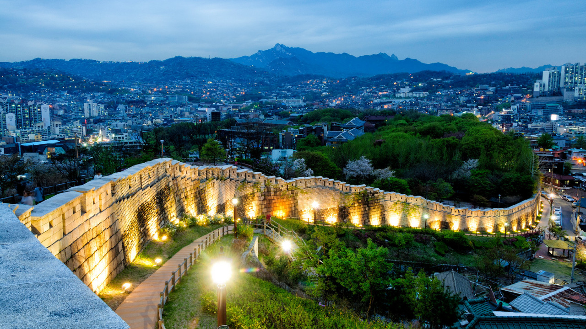
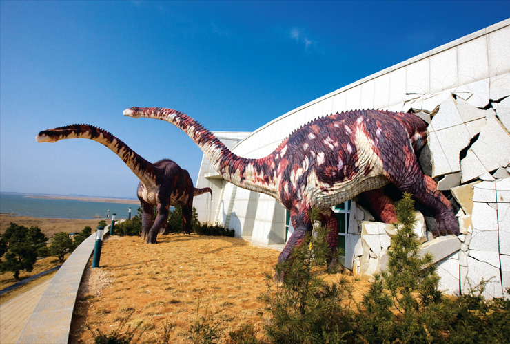

The capital city of Korea is Seoul. Though it is small nation, the city bustling alive day in and day out. It's often called the city that never goes to sleep. The busy city also is centered around the transportation of buses and especially subways. The small nation holds unbeatable records for the most efficient subways in the world that snakes around the whole city of Seoul. The Han River is also a popular trademark of Seoul, where colorful lights light up the whole city. The nation's most prettiest side comes to view at night, when the cheerful vibe settles. Tourist, but also natives roam the night streets of Seoul, enjoying the cheap but delicious street food, but best of all, the company of close friends.

Haenam is another Korean city south of Seoul. It is my hometown, though I don't remember much about the place. One particular building in Haenam attracts the attention of foreign scientist, but also tourists and young natives as well. It is called the Haenam Dinosaur Museum. The picture below shows a dinosaur breaking out of the museum on the run, a clever structure that captives passer byers. Inside the building, real footprints of large dinosaurs are present, along with old bones and fossils. There are also large dinosaurs outside the structure, where thousands of pictures of were taken. Because of its educational attribute, the museum is a popular field trip site for many elementary schools.
https://www.google.com/url?sa=i&rct=j&q=&esrc=s&source=images&cd=&cad=rja&uact=8&ved=0ahUKEwiM-q7m_ujWAhUK12MKHSjcBEoQjRwIBw&url=http%3A%2F%2Fwww.netkoa.org%2Fen%2Fread.php%3Fno%3D358&psig=AOvVaw05GG5QVQGIpdMCzWpYyasU&ust=1507825753843456 https://www.google.com/url?sa=i&rct=j&q=&esrc=s&source=images&cd=&cad=rja&uact=8&ved=0ahUKEwjl5sqG_ujWAhUQ_mMKHXgcARYQjRwIBw&url=https%3A%2F%2Fluxuryasiavacation.com%2Ffeatured%2Ftravel-tips-for-seoul-south-korea.html&psig=AOvVaw3JVnvKIa57todXQGePiS0g&ust=1507825555318913